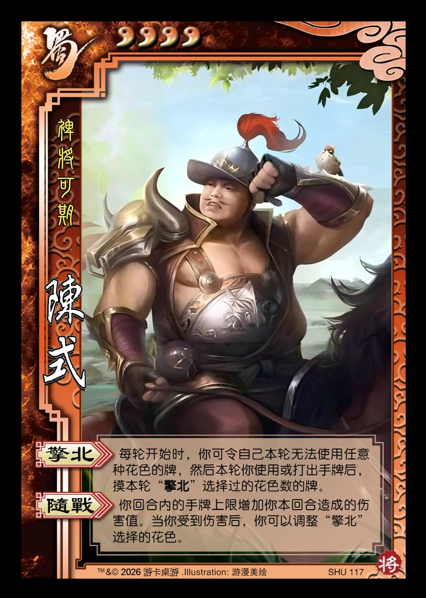

点击卡面查看大图
蜀
陈式
♥4裨将可期
擎北
每轮开始时，你可令自己本轮无法使用任意种花色的牌，然后本轮你使用或打出手牌后，摸本轮“擎北”选择过的花色数的牌。
随战
你回合内的手牌上限增加你本回合造成的伤害值。当你受到伤害后，你可以调整“擎北”选择的花色。

点击卡面查看大图
裨将可期
每轮开始时，你可令自己本轮无法使用任意种花色的牌，然后本轮你使用或打出手牌后，摸本轮“擎北”选择过的花色数的牌。
你回合内的手牌上限增加你本回合造成的伤害值。当你受到伤害后，你可以调整“擎北”选择的花色。